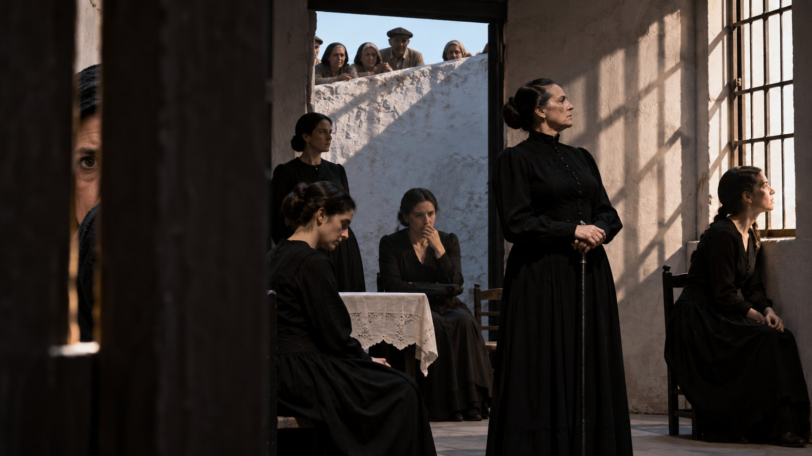

Federico García Lorca / La casa de Bernarda Alba / 1936
La vigilancia y el pacto teatral
La atmósfera asfixiante de la casa no opera de forma aislada. A través de la tensión constante entre el encierro y el qué dirán, la puesta en escena transforma al espectador en un vecino más del pueblo que espía los movimientos a través de la rendija de la puerta o la ventana. El público asume una culpa colectiva en la vigilancia que ahoga a los personajes.
Pase el cursor o el dedo por la imagen. La rendija sigue a quien mira.